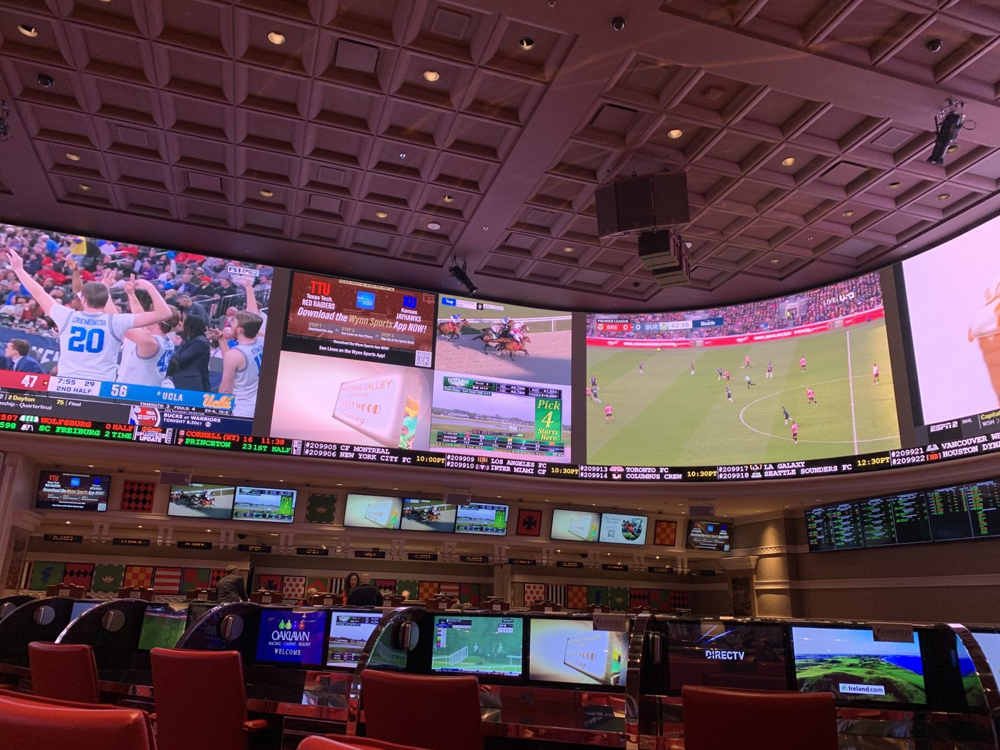
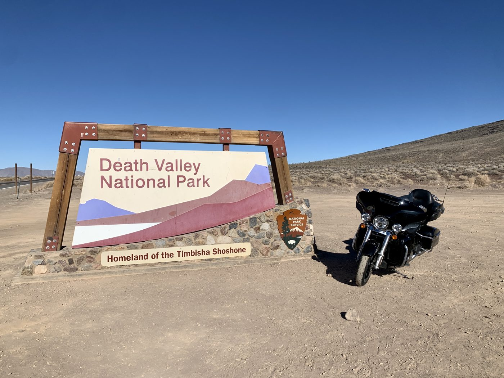
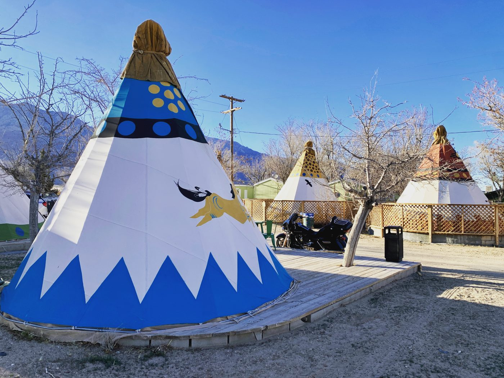
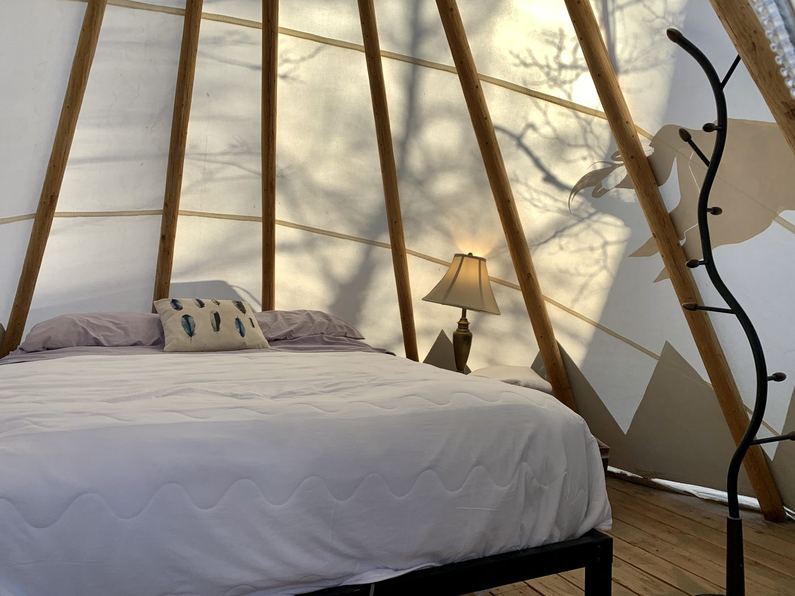
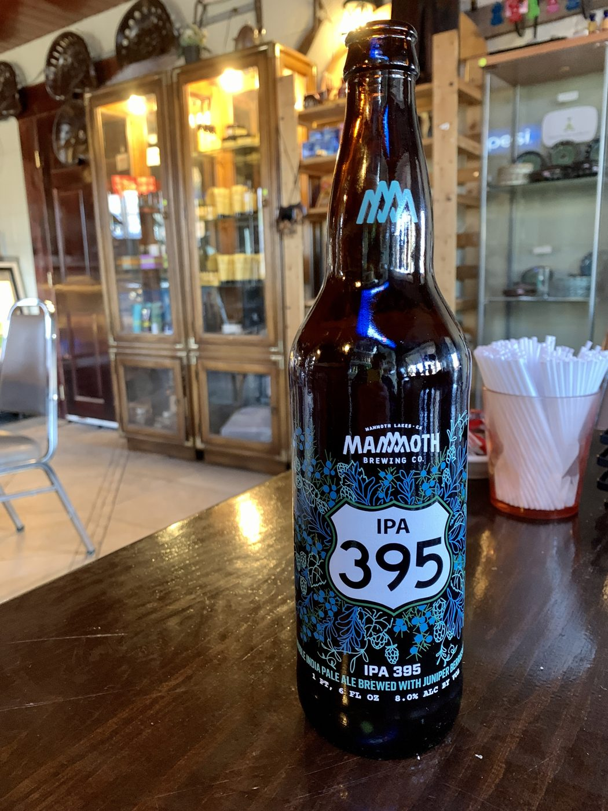
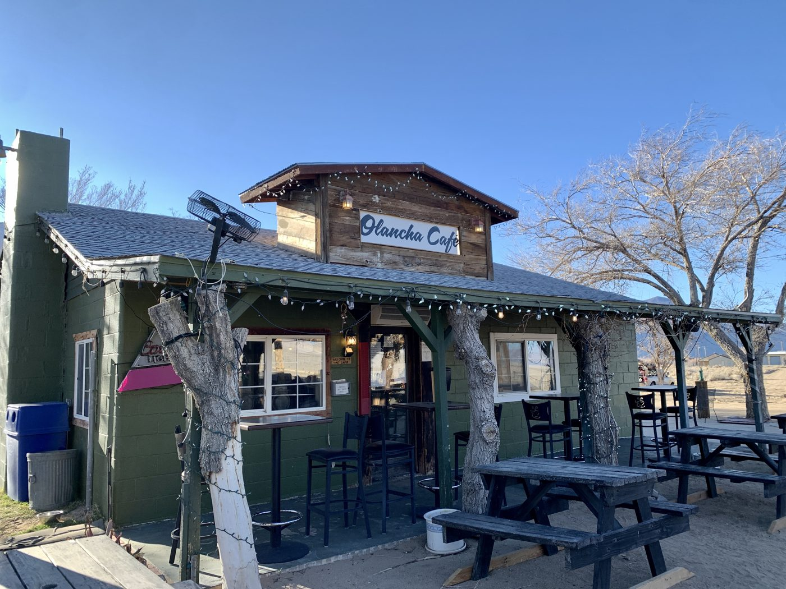
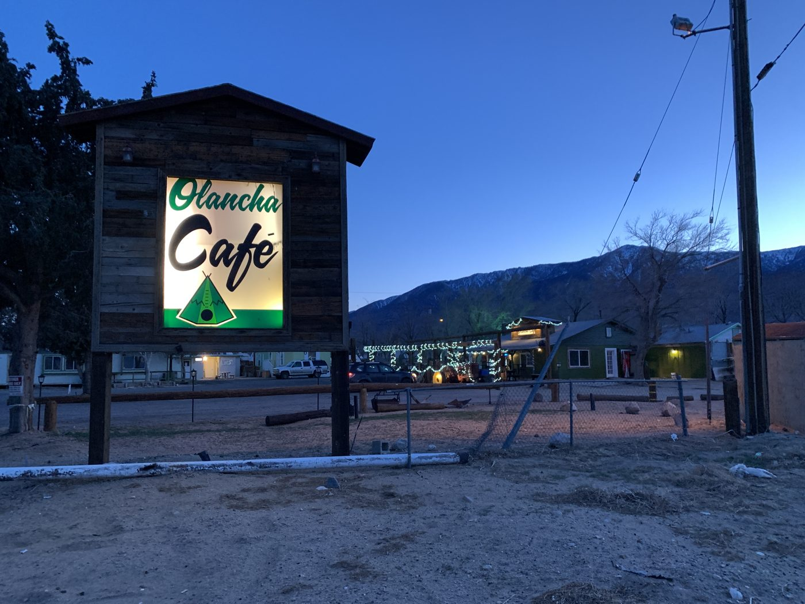

Day 1 · Sat, Mar 12
Las Vegas, NV Olancha, CA
West from Las Vegas through Death Valley to US-395 under the Sierra, and a night in a teepee at Olancha.
By way of
- Death Valley National Park






